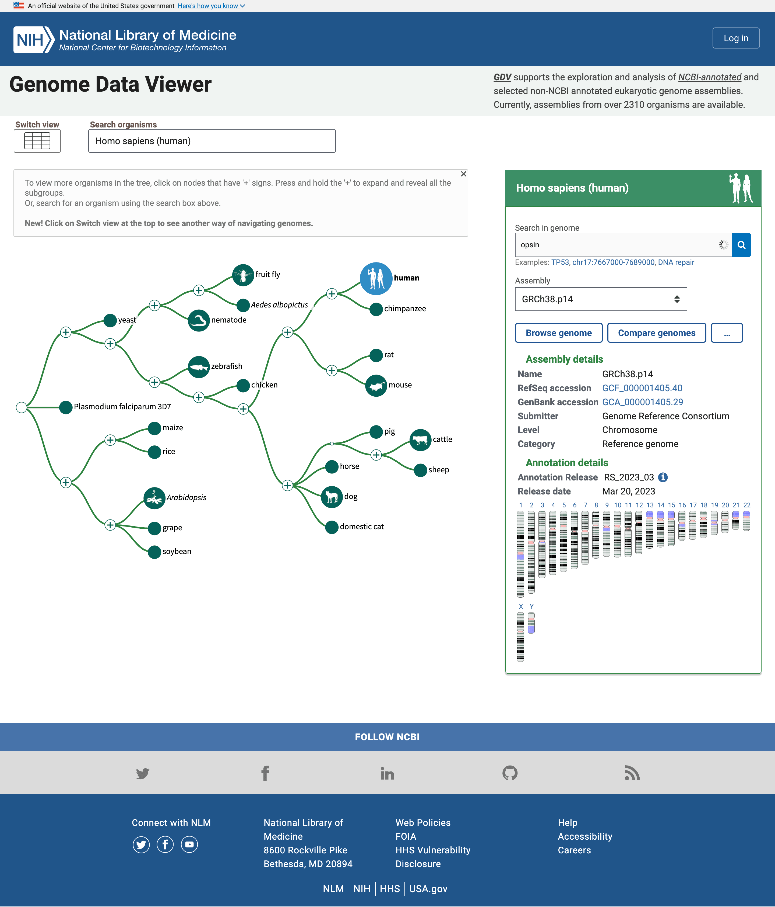
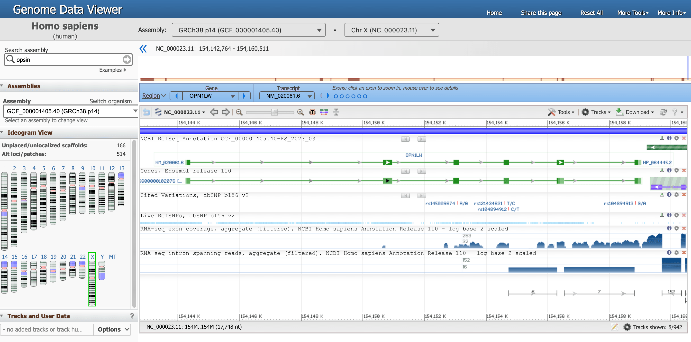
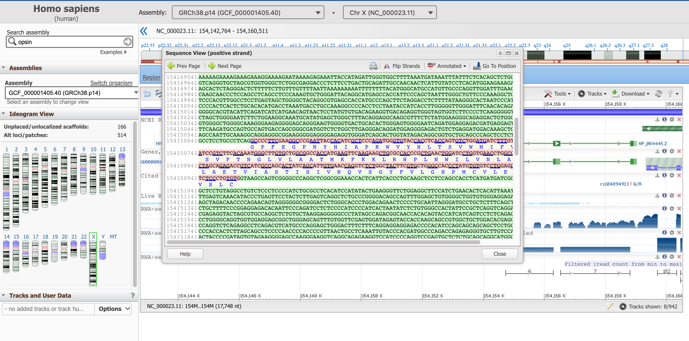
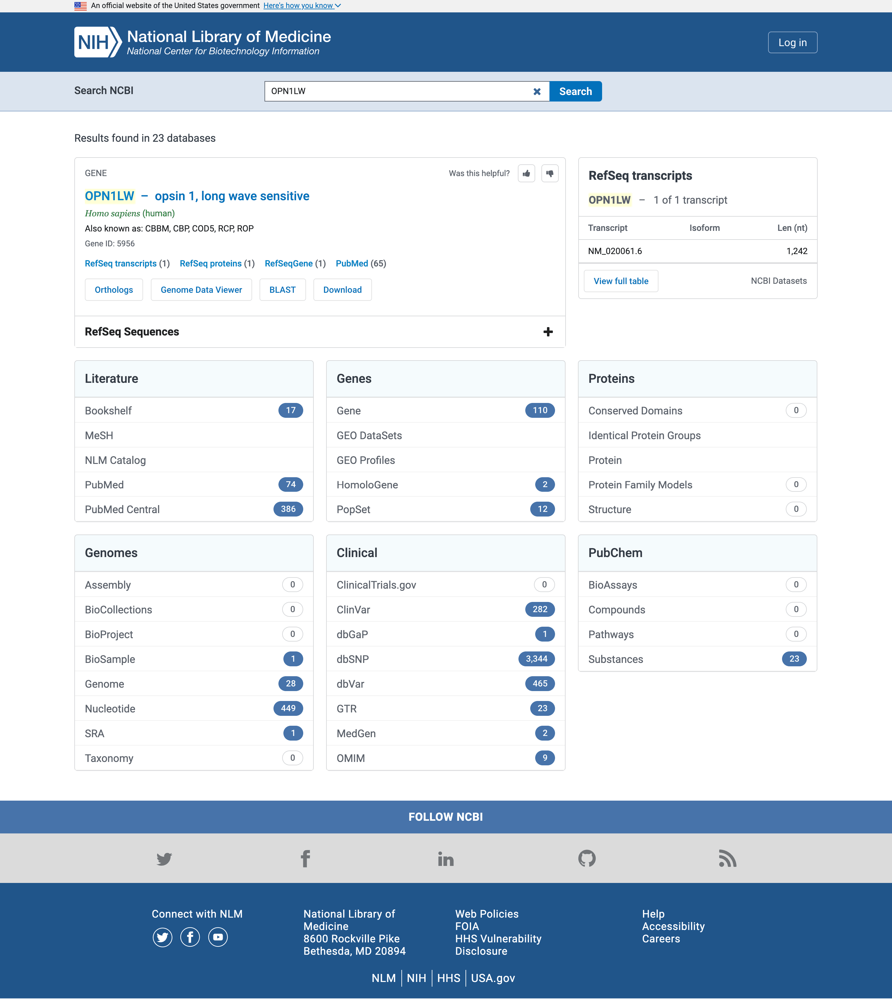
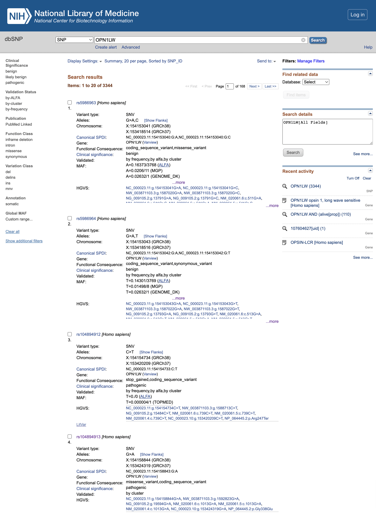
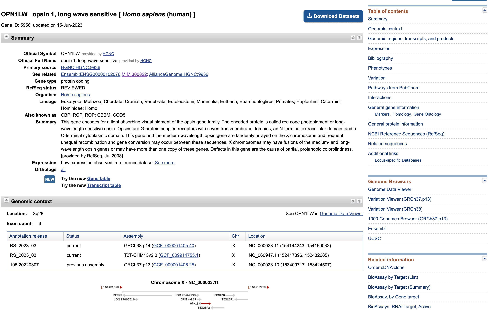
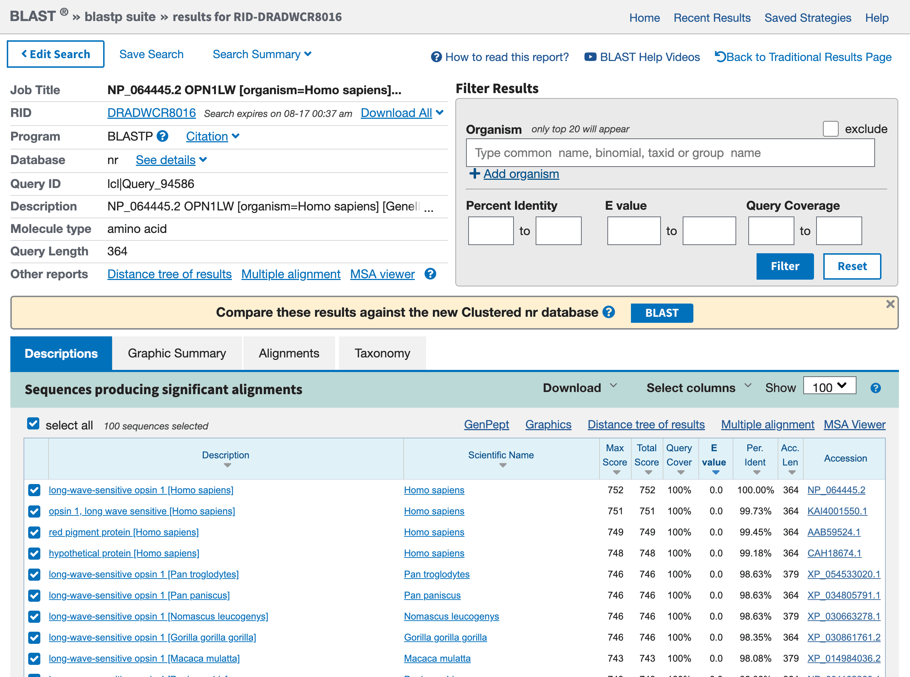

Lernen über ein Gen über biologische Ressourcen und Formate hinweg
Under Development!
This tutorial is not in its final state. The content may change a lot in the next months. Because of this status, it is also not listed in the topic pages.
| Autoren |
|
| Übersetzer |
|
| Gutachter |
|
ÜberblickFragen:
Lernziele:
Wie kann man bioinformatische Ressourcen nutzen, um eine bestimmte Proteinfamilie (Opsine) zu untersuchen?
Wie navigiert man im Genome Data Viewer, um Opsine im menschlichen Genom zu finden?
Wie identifiziert man Gene, die mit Opsinen assoziiert sind, und analysiert ihre Chromosomenlage?
Wie erkundet man Literatur und klinische Kontexte für das Gen OPN1LW?
Wie nutzt man Proteinsequenzdateien für Ähnlichkeitssuchen mittels BLAST?
Ausgehend von einer Textsuche mehrere Webressourcen anzusteuern, um verschiedene Arten von Informationen über ein Gen zu untersuchen, dargestellt in verschiedenen Dateiformaten.
Geschätzte Bearbeitungszeit: 1 StundeLevel: Einsteiger IntroductoryUnterstützende Materialien:Veröffentlicht: Mar 9, 2026Letzte Änderung: Mar 9, 2026Lizenz: Der Inhalt des Tutorials ist lizenziert unter der Creative Commons Attribution 4.0 International License. Das GTN Framework ist lizenziert unter MITversion Überarbeitung: 1
Wenn wir eine bioinformatische Analyse durchführen, z. B. RNA-seq, erhalten wir möglicherweise eine Liste von Gennamen. Dann müssen wir diese Gene untersuchen. Aber wie können wir das tun? Welche Ressourcen stehen dafür zur Verfügung? Und wie kann man durch sie navigieren?
Ziel dieses Tutoriums ist es, sich damit am Beispiel der menschlichen Opsine vertraut zu machen.
Menschliche Opsine befinden sich in den Zellen der Netzhaut. Opsine fangen Licht ein und setzen die Signalfolge in Gang, die zum Sehen führt. Wir werden Fragen über Opsine und Opsin-Gene stellen und dann verschiedene bioinformatische Datenbanken und Ressourcen nutzen, um sie zu beantworten.
KommentarDieses Tutorial ist ein wenig untypisch: Wir werden nicht in Galaxy arbeiten, sondern hauptsächlich außerhalb, indem wir Datenbanken und Tools über ihre eigenen Webschnittstellen navigieren. Das Ziel dieses Tutorials ist es, verschiedene Quellen für biologische Daten in unterschiedlichen Dateiformaten und mit unterschiedlichen Informationen zu veranschaulichen.
AgendaIn diesem Tutorium werden wir uns mit:
Suche nach humanen Opsinen
Um nach menschlichen Opsinen zu suchen, beginnen wir mit dem NCBI Genome Data Viewer. Der NCBI Genome Data Viewer (GDV) (Rangwala et al. 2021) ist ein Genom-Browser, der die Erforschung und Analyse von annotierten eukaryotischen Genomassemblies unterstützt. Der GDV-Browser zeigt biologische Informationen an, die einem Genom zugeordnet sind, einschließlich Genannotation, Variationsdaten, BLAST-Alignments und experimentelle Studiendaten aus den Datenbanken NCBI GEO und dbGaP. In den GDV-Versionshinweisen werden neue Funktionen für diesen Browser beschrieben.
Praktische Übung: Öffnen des NCBI Genome Data Viewer
- Öffnen Sie den NCBI Genome Data Viewer unter www.ncbi.nlm.nih.gov/genome/gdv
Die Homepage enthält einen einfachen “Baum des Lebens”, in dem der menschliche Knoten hervorgehoben ist, weil er der Standardorganismus für die Suche ist. Wir können das im Feld Organismen suchen ändern, aber wir lassen das vorerst, da wir an menschlichen Opsinen interessiert sind.

Open image in new tabDas Feld auf der rechten Seite zeigt mehrere Zusammenstellungen des Genoms von Interesse und eine Karte der Chromosomen in diesem Genom. Dort können wir nach Opsinen suchen.
Praktische Übung: Suche nach OpsinsOpen NCBI Genome Data Viewer
- Geben Sie
opsinin das Feld Suche im Genom ein- Klicken Sie auf das Lupensymbol oder drücken Sie Eingabe
Unterhalb des Kastens wird nun eine Tabelle mit Genen, die mit Opsin verwandt sind, zusammen mit ihren Namen und ihrer Lage, d.h. der Chromosomennummer, sowie der Anfangs- und Endposition angezeigt
In der Liste der Gene, die mit dem Suchbegriff Opsin in Verbindung stehen, befinden sich das Rhodopsin-Gen (RHO) und drei Zapfenpigmente, kurz-, mittel- und langwellensensitive Opsine (für die Erkennung von blauem, grünem und rotem Licht). Es gibt noch weitere Einheiten, z. B. eine -LCR (Locus Control Region), mutmaßliche Gene und Rezeptoren.
Mehrere Treffer befinden sich auf dem X-Chromosom, einem der geschlechtsbestimmenden Chromosomen.
Frage
- Wie viele Gene wurden auf dem Chromosom X gefunden?
- Wie viele proteinkodierende Gene gibt es?
- Die Treffer in ChrX sind:
- OPSIN-LCR
- OPN1LW
- OP1MW
- OPN1MW2
- OPN1MW3
- Wenn wir mit dem Mauszeiger über jedes Gen fahren, öffnet sich ein Kasten, und wir können auf Details klicken, um mehr über jedes Gen zu erfahren. Dann erfahren wir, dass das erste (OPSIN-LCR) nicht proteincodierend ist, sondern eine Genregulationsregion darstellt und die anderen proteincodierende Gene sind. Es gibt also 4 proteinkodierende Gene für Opsine auf Chromosom X. Insbesondere enthält Chromosom X ein rotes Pigmentgen (OPN1LW) und drei grüne Pigmentgene (OPN1MW, OPN1MW2 und OPN1MW3 in der Referenzgenomeinheit).
Konzentrieren wir uns nun auf ein bestimmtes Opsin, das Gen OPN1LW.
Praktische Übung: Open Genome Browser für das Gen OPN1LW
- Klicken Sie auf den blauen Pfeil, der in der Ergebnistabelle erscheint, wenn Sie mit der Maus über die Zeile OPN1LW fahren
Sie sollten auf dieser Seite gelandet sein, das ist die Genomansicht des Gens OPN1LW.

Open image in new tabEs gibt viele Informationen auf dieser Seite, konzentrieren wir uns momentan auf einen Abschnitt.
- Der Genomdaten-Viewer, oben, sagt uns, dass wir die Daten des Organismus
Homo sapiens, der AssemblierungGRCh38.p14und insbesondere vonChr X(Chromosom X) betrachten. Jede dieser Informationen hat eine eindeutige ID. - Das gesamte Chromosom ist direkt darunter dargestellt, und die Positionen entlang der kurzen
pund langenqArme sind hochgestellt. -
Ein blauer Kasten unterstreicht, dass wir uns jetzt auf die Region konzentrieren, die dem Gen
OPN1LWentspricht.Es gibt mehrere Möglichkeiten, mit dem Viewer unten zu interagieren. Versuchen Sie zum Beispiel, mit der Maus über die Punkte zu fahren, die Exons in der blauen Box darstellen.
-
In der nachstehenden Grafik ist die Gensequenz als grüne Linie dargestellt, die Exons (proteincodierende Fragmente) sind durch grüne Rechtecke gekennzeichnet.
Fahren Sie mit der Maus über die grüne Linie, die
NM_020061.6(unser Gen von Interesse) entspricht, um genauere Informationen zu erhalten.Frage- An welcher Stelle befindet sich das OPN1LW-Segment?
- Wie lang ist das OPN1LW-Segment?
- Was sind Introns und Exons?
- Wie viele Exons und Introns befinden sich im OPN1LW-Gen?
- Wie lang ist der kodierende Bereich insgesamt?
- Wie ist die Verteilung zwischen kodierenden und nicht kodierenden Regionen? Was bedeutet das in Bezug auf die Biologie?
- Wie lang ist die Länge des Proteins in Anzahl der Aminosäuren?
- Von 154.144.243 bis 154.159.032
- 1.4790 Nukleotide, gefunden bei Span auf 14790 nt, Nukleotide)
- Eukaryotische Gene sind oft durch nicht-kodierende Regionen unterbrochen, die als Intervallsequenzen oder Introns bezeichnet werden. Die kodierenden Bereiche werden Exons genannt.
- Aus diesem Diagramm kann man erkennen, dass das OPN1LW-Gen aus 6 Exons und 5 Introns besteht und dass die Introns viel größer sind als die Exons.
- Die CDS-Länge beträgt 1.095 Nukleotide.
- Von den 14790 nt des Gens kodieren nur 1095 nt für ein Protein, was bedeutet, dass weniger als 8 % der Basenpaare den Code enthalten. Wenn dieses Gen in Zellen der menschlichen Netzhaut exprimiert wird, wird eine RNA-Kopie des gesamten Gens synthetisiert. Dann werden die Intron-Regionen herausgeschnitten und die Exon-Regionen zusammengefügt, um die reife mRNA zu erzeugen (ein Prozess, der als Spleißen bezeichnet wird), die dann von den Ribosomen bei der Herstellung des roten Opsin-Proteins übersetzt wird. In diesem Fall werden 92 % des ursprünglichen RNA-Transkripts herausgeschnitten, so dass der reine Proteincode übrig bleibt.
- Die Länge des resultierenden Proteins beträgt 364 aa, Aminosäuren.
Aber wie lautet die Sequenz dieses Gens? Es gibt mehrere Möglichkeiten, diese Information zu erhalten, wir werden eine der intuitivsten durchgehen.
Praktische Übung: Open Genome Browser für das Gen OPN1LW
- Klicken Sie auf den tool Werkzeuge oben rechts in der Box, die das Gen
- Klicken Sie auf Sequence Text View
Diese Tafel zeigt die DNA-Sequenz der Introns (in grün), sowie die der Exons (in rosa, einschließlich der übersetzten Proteinsequenz unten).

Open image in new tabDiese Sequenzbox zeigt im Moment nicht das gesamte Gen, sondern eine Teilsequenz davon. Mit den Pfeilen Prev Page und Next Page können Sie sich im genetischen Code stromaufwärts und stromabwärts bewegen oder mit der Schaltfläche Go To Position an einer bestimmten Stelle beginnen. Wir schlagen vor, mit dem Anfang des kodierenden Teils des Gens zu beginnen, der sich, wie wir bereits gelernt haben, an Position 154,144,243 befindet.
Praktische Übung: Zu einer bestimmten Position in der Sequenzansicht gehen
- Klicken Sie auf Zur Position gehen
Tippen Sie auf
154144243Wir müssen die Kommas entfernen, um den Wert zu validieren
Die hier lila hervorgehobene Sequenz signalisiert eine regulatorische Region.
Frage
- Wie lautet die erste Aminosäure des entstehenden Proteinprodukts?
- Welche ist die letzte?
- Können Sie sich die ersten drei und die letzten drei AAs dieses Proteins merken?
- Das entsprechende Protein beginnt mit Methionin, M (das tun sie alle).
- Das letzte AA des letzten Exons (zu finden auf der 2. Seite) ist Alanin (A). Danach kommt das Stoppcodon TGA, das nicht in eine AA übersetzt wird.
- Die ersten drei AAs sind: M,A,Q; die letzten drei: S,P,A.
Wir können jetzt die Sequenzansicht schließen.
Von dieser Ressource können wir auch Dateien in verschiedenen Formaten erhalten, die das Gen beschreiben. Sie sind im Bereich Download verfügbar.
- Download FASTA ermöglicht es uns, das einfachste Dateiformat herunterzuladen, um die Nukleotidsequenz des gesamten sichtbaren Bereichs des Genoms darzustellen (länger als nur ein Gen).
- Download GenBank flat file ermöglicht uns den Zugriff auf die auf dieser Seite (und darüber hinaus) verfügbaren Anmerkungen in einem Plaintext-Format.
- Download Track Data ermöglicht es uns, zwei der in den Folien vorgestellten Dateiformate einzusehen: die Formate GFF (GFF3) und BED. Wenn Sie die Tracks ändern, kann es sein, dass die einzelnen Formate nicht mehr verfügbar sind.
Suche nach weiteren Informationen über unser Gen
Verschaffen wir uns nun einen Überblick über die Informationen, die wir (in der Literatur) über unser Gen haben, indem wir die NCBI-Ressourcen nutzen
Praktische Übung: Zu einer bestimmten Position in der Sequenzansicht gehen
- Öffnen Sie die NCBI-Suche unter www.ncbi.nlm.nih.gov/search
- Geben Sie
OPN1LWin das Suchfeld Search NCBI ein

Open image in new tab.
Literatur
Beginnen wir mit der Literatur und insbesondere den Ergebnissen von PubMed oder PubMed Central
PubMed ist eine biomedizinische Literaturdatenbank, die die Zusammenfassungen der Veröffentlichungen in der Datenbank enthält.
PubMed Central ist ein Volltext-Repositorium, das den Volltext von Veröffentlichungen in der Datenbank enthält.
Auch wenn die genaue Anzahl der Treffer zeitlich von der obigen Abbildung abweichen kann, sollte jeder Genname in PubMed Central (durchsucht in den Volltexten der Veröffentlichungen) mehr Treffer aufweisen als in PubMed (durchsucht nur in den Abstracts).
Praktische Übung: Öffne PubMed
- Klicken Sie auf PubMed im Feld Literature
Sie haben in PubMed, einer kostenlosen Datenbank für wissenschaftliche Literatur, die Ergebnisse einer vollständigen Suche nach Artikeln eingegeben, die direkt mit diesem Genlocus in Verbindung stehen.
Wenn Sie auf den Titel eines Artikels klicken, können Sie die Kurzfassung des Artikels sehen. Wenn Sie sich auf einem Universitätscampus befinden, wo es einen Online-Zugang zu bestimmten Zeitschriften gibt, sehen Sie möglicherweise auch Links zu vollständigen Artikeln. PubMed ist Ihr Zugang zu einer großen Vielfalt an wissenschaftlicher Literatur im Bereich der Biowissenschaften. Auf der linken Seite jeder PubMed-Seite finden Sie Links zu einer Beschreibung der Datenbank, zur Hilfe und zu Anleitungen für die Suche.
Frage
- Können Sie erraten, welche Art von Erkrankungen mit diesem Gen verbunden sind?
- Wir werden diese Frage später beantworten
Praktische Übung: Zurück zur NCBI-Suchseite
- Zurück zur NCBI-Suchseite
Klinisch
Konzentrieren wir uns nun auf das Feld Klinisch, und zwar speziell auf OMIM. OMIM, das Online Mendeliam Inheritance in Man (and woman!), ist ein Katalog menschlicher Gene und genetischer Störungen.
Praktische Übung: Open OMIM
- Klicken Sie auf OMIM im Feld Klinisch
Jeder OMIM-Eintrag steht für eine genetische Störung (hier vor allem Arten von Farbenblindheit), die mit Mutationen in diesem Gen verbunden ist.
Praktische Übung: Lesen Sie so viel, wie es Ihr Interesse erfordert
- Folgen Sie den Links, um weitere Informationen zu den einzelnen Einträgen zu erhalten
Kommentar: Lesen Sie so viel, wie es Ihr Interesse erfordertFür weitere Informationen über OMIM selbst klicken Sie bitte auf das OMIM-Logo oben auf der Seite. Über OMIM ist eine Fülle von Informationen zu unzähligen Genen im menschlichen Genom verfügbar, und alle Informationen sind durch Verweise auf die neuesten Forschungsartikel untermauert.
Wie wirken sich Variationen des Gens auf das Proteinprodukt und seine Funktionen aus? Gehen wir zurück zur NIH-Seite und untersuchen wir die Liste der Einzelnukleotid-Polymorphismen (SNPs), die durch genetische Studien in diesem Gen entdeckt wurden.
Praktische Übung: Öffne dbSNP
- Zurück zur NCBI-Suchseite
- Klicken Sie auf dbSNP im Feld Klinisch

Open image in new tabFrage
- Welche klinische Bedeutung haben die rs5986963 und rs5986964 (die ersten beiden Varianten, die zum Zeitpunkt der Erstellung dieses Tutorials aufgelistet waren)?
- Was ist die funktionelle Folge von rs104894912?
- Was ist die funktionelle Folge von rs104894913?
- Die klinische Signifikanz ist
benign, so dass es scheint, dass sie keinen Einfluss auf das endgültige Proteinprodukt haben- rs104894912-Mutation führt zu einer
stop_gained-Variante, die das resultierende Protein zu früh abschneidet und daherpathogenicist- rs104894913 Mutation führt zu einem
missense_variant, auchpathogenic.
Lassen Sie uns mehr über die Variante rs104894913 herausfinden
Praktische Übung: Erfahren Sie mehr über eine Variante dbSNP
- Klicken Sie auf
rs104894913, um die dazugehörige Seite zu öffnen (https://www.ncbi.nlm.nih.gov/snp/rs104894913)Klicken Sie auf Clinical Significance
FrageWelche Art von Erkrankung ist mit der Variante rs104894913 verbunden?
Der Name der damit verbundenen Krankheit ist “Protan-Defekt”. Eine schnelle Internetrecherche mit Ihrer Suchmaschine wird Ihnen zeigen, dass es sich um eine Art von Farbenblindheit handelt.
Klicken Sie auf die Variantendetails
Frage
- Welche Substitution ist mit dieser Variante verbunden?
- Welche Auswirkung hat diese Substitution auf das Codon und die Aminosäure?
- An welcher Stelle des Proteins befindet sich diese Substitution?
- Die Substitution
NC_000023.10:g.153424319G>Aentspricht dem Wechsel von einem Guanin (G) zu einem Adenin (A)- Diese Substitution ändert das Codon
GGG, ein Glycin, inGAG, ein Glutathionp.Gly338Glubedeutet, dass sich die Substitution an Position 338 des Proteins befindet.
Was bedeutet diese Substitution für das Protein? Schauen wir uns dieses Protein einmal genauer an.
Protein
Praktische Übung: Protein öffnen
- Zurück zur NCBI-Suchseite
- Klicken Sie auf Protein im Feld Proteine
- Klicken Sie auf
OPN1LW – opsin 1, long wave sensitivein der Box oben

Open image in new tabAuf dieser Seite werden wieder einige Daten präsentiert, die wir kennen (z. B. die Verteilung der Exons entlang der Gensequenz).
Praktische Übung: Download der Proteinsequenzen
- Klicken Sie auf Download Datasets
- Wählen Sie
Gene Sequences (FASTA)Transcript sequences (FASTA)Protein sequences (FASTA)- Klicken Sie auf die Schaltfläche Download
- Öffnen Sie die heruntergeladene ZIP-Datei
Frage
- Was enthält der Ordner?
- Glauben Sie, dass sie gute Datenpraktiken umgesetzt haben?
- Der Ordner enthält
- ein Ordner
ncbi_datasetsmit verschiedenen Unterordnern darin, die einige Datendateien (mehrere Formate) führen,- eine
README.md(eine Markdown-Datei), die zusammen mit den Daten “reisen” soll und erklärt, wie die Daten gewonnen wurden, wie die Struktur des Unterordners, der die Daten enthält, aussieht und wo man eine ausführliche Dokumentation findet.- Es ist auf jeden Fall eine gute Datenverwaltungspraxis, die Benutzer (nicht nur für Ihre Mitarbeiter, sondern auch für Sie selbst in nicht allzu ferner Zukunft, wenn Sie vergessen haben, woher die Datei in Ihrem Download-Ordner stammt) zur Datenquelle und zur Datenstruktur zu führen.
Suche nach Sequenz
Was können wir mit den soeben heruntergeladenen Sequenzen tun? Nehmen wir an, dass wir gerade die Transkripte sequenziert haben, die wir durch ein Experiment isoliert haben - wir kennen also die Sequenz der Entität, die uns interessiert, aber wir wissen nicht, um welche es sich handelt. In diesem Fall müssen wir die gesamte Datenbank mit den der Wissenschaft bekannten Sequenzen durchsuchen und unsere unbekannte Entität mit einem Eintrag abgleichen, der eine Annotation enthält. Tun wir es.
Praktische Übung: Suche die Proteinsequenz gegen alle Proteinsequenzen
- Öffnen Sie (mit dem einfachsten Texteditor, den Sie installiert haben) die soeben heruntergeladene Datei
protein.faa.- Kopieren Sie den Inhalt
- Öffnen Sie BLAST blast.ncbi.nlm.nih.gov
Klicken Sie auf
Protein BLAST, protein > proteinWir werden in der Tat eine Proteinsequenz verwenden, um eine Datenbank mit Proteinen zu durchsuchen
- Fügen Sie die Proteinsequenz in das große Textfeld ein
- Überprüfen Sie die restlichen Parameter
- Klicken Sie auf die blaue Schaltfläche
BLAST
Diese Phase wird einige Zeit in Anspruch nehmen, schließlich gibt es irgendwo einen Server, der die Gesamtheit der bekannten Sequenzen mit Ihrem Ziel vergleicht. Wenn die Suche abgeschlossen ist, sollte das Ergebnis etwa so aussehen wie unten:

Open image in new tabPraktische Übung: Grafische Zusammenfassung der Proteinsequenzen
- Klicken Sie auf die Registerkarte Graphic Summary
Wir haben Zugriff auf einen Kasten mit vielen farbigen Linien. Jede Linie steht für einen Treffer aus Ihrer Blast-Suche. Wenn Sie auf eine rote Linie klicken, gibt der schmale Kasten direkt darüber eine kurze Beschreibung des Treffers.
Praktische Übung: Beschreibungen der Proteinsequenzen
- Klicken Sie auf die Registerkarte Beschreibungen
Frage
- Was ist der erste Treffer? Haben Sie ihn erwartet?
- Was sind die anderen Treffer und für welche Organismen?
- Der erste Treffer ist unser rotes Opsin. Das ist ermutigend, denn die beste Übereinstimmung sollte die Abfragesequenz selbst sein, und Sie haben diese Sequenz aus diesem Geneintrag erhalten.
- Andere Treffer sind andere Opsine. Dazu gehören Einträge von anderen Primaten (z.B.
Pan troglogytes).
Die Treffer sind für unser rotes Opsin beim Menschen, aber auch für andere Opsine bei anderen Primaten. Das könnte man sich wünschen, wenn man diese Daten zum Beispiel zur Erstellung eines phylogenetischen Baums verwenden will. Wenn wir aber ziemlich sicher sind, dass die Sequenz, die uns interessiert, vom Menschen stammt, können wir die Suche auch nur auf menschliche Sequenzen beschränken.
Praktische Übung: Filtern einer BLAST-Suche
- Klicken Sie auf Suche bearbeiten
- Geben Sie
Homo sapiensin das Feld Organismus ein- Klicken Sie auf die blaue Schaltfläche
BLAST
Mit dieser neuen Suche finden wir die anderen Opsine (grünes, blaues, Stäbchenpigment) in der Liste. Andere Treffer haben eine geringere Anzahl von übereinstimmenden Rückständen. Wenn Sie auf eine der farbigen Linien in der Grafischen Zusammenfassung klicken, erhalten Sie weitere Informationen über diesen Treffer und können sehen, wie ähnlich jeder einzelne dem roten Opsin, unserer ursprünglichen Suchsequenz, ist. Je weiter Sie in der Liste nach unten gehen, desto weniger hat jede nachfolgende Sequenz mit dem roten Opsin gemeinsam. Jede Sequenz wird im Vergleich zu rotem Opsin in einem so genannten paarweisen Sequenzabgleich dargestellt. Später werden Sie mehrere Sequenzalignments erstellen, aus denen Sie die Beziehungen zwischen den Genen erkennen können.
Die Anzeigen enthalten zwei prominente Maße für die Bedeutung des Treffers:
der BLAST Score - lableled Score (bits)
Der BLAST-Score gibt die Qualität des besten Alignments zwischen der Abfragesequenz und der gefundenen Sequenz (Treffer) an. Je höher die Punktzahl, desto besser ist das Alignment. Die Punktzahl wird durch Nichtübereinstimmungen und Lücken im besten Alignment verringert. Die Berechnung des Scores ist komplex und beinhaltet eine Substitutionsmatrix, d. h. eine Tabelle, die jedem Paar von ausgerichteten Resten einen Score zuweist. Die am häufigsten verwendete Matrix für das Protein-Alignment ist BLOSUM62.
der Erwartungswert (mit Expect oder E bezeichnet)
Der Erwartungswert E eines Treffers sagt aus, ob der Treffer wahrscheinlich aus einer zufälligen Ähnlichkeit zwischen Treffer und Abfrage oder aus einer gemeinsamen Abstammung von Treffer und Abfrage resultiert. ()
Kommentar: Filtern einer BLAST-SucheWenn E kleiner als \(10\mathrm{e}{-100}\) ist, wird es manchmal als 0,0 angegeben.
Der Erwartungswert ist die Anzahl der Treffer, die man rein zufällig erwarten würde, wenn man in einem zufälligen Genom von der Größe des menschlichen Genoms nach seiner Sequenz suchen würde.
\(E = 25\) bedeutet, dass man in einem Genom dieser Größe rein zufällig 25 Treffer erwarten könnte. Ein Treffer mit \(E = 25\) ist also wahrscheinlich ein Zufallstreffer und bedeutet nicht, dass die Treffersequenz eine gemeinsame Abstammung mit Ihrer Suchsequenz hat.
Erwartungswerte von etwa 0,1 können biologisch signifikant sein oder auch nicht (um dies zu entscheiden, sind weitere Tests erforderlich).
Aber sehr kleine Werte von E bedeuten, dass der Treffer biologisch signifikant ist. Die Übereinstimmung zwischen Ihrer Suchsequenz und diesem Treffer muss auf eine gemeinsame Abstammung der Sequenzen zurückzuführen sein, denn die Wahrscheinlichkeit ist einfach zu gering, dass die Übereinstimmung zufällig zustande kommt. Zum Beispiel bedeutet \(E = 10\mathrm{e}{-18}\) für einen Treffer im menschlichen Genom, dass man nur eine zufällige Übereinstimmung in einer Milliarde Milliarden verschiedener Genome von der gleichen Größe wie das menschliche Genom erwarten würde.
Der Grund, warum wir glauben, dass wir alle von gemeinsamen Vorfahren abstammen, ist, dass eine massive Sequenzähnlichkeit in allen Organismen einfach zu unwahrscheinlich ist, um ein zufälliges Ereignis zu sein. Jede Familie ähnlicher Sequenzen in vielen Organismen muss sich aus einer gemeinsamen Sequenz in einem entfernten Vorfahren entwickelt haben.
Praktische Übung: Entladen
- Klicken Sie auf die Registerkarte Beschreibungen
- Klicken Sie auf einen beliebigen Sequenztreffer
- Klicken Sie auf Download
- Wählen Sie
FASTA (aligned sequences)
Es wird ein neuer, etwas anderer Dateityp heruntergeladen: eine ausgerichtete FASTA. Wenn Sie möchten, können Sie diese vor dem nächsten Abschnitt untersuchen.
Während wir in den vorangegangenen Abschnitten dieses Tutorials ausgiebig die Webschnittstellen der Tools genutzt haben (Genomic Viewer, schnelles Scannen der Literatur, Lesen von Annotationen usw.), ist diese BLAST-Suche ein Beispiel für einen Schritt, den Sie mit Galaxy vollständig automatisieren könnten.
Praktische Übung: Ähnlichkeitssuche mit BLAST in Galaxy
Erstellen Sie einen neuen Verlauf für diese Analyse
Um einen neuen Verlauf zu erstellen, klicken Sie einfach auf das Symbol new-history am oberen Rand des Verlaufsfensters:
Umbenennen der Historie
- Klicken Sie auf galaxy-pencil (Bearbeiten) neben dem Namen der Geschichte (der standardmäßig “Unbenannte Geschichte” lautet)
- Geben Sie den neuen Namen ein
- Klicken Sie auf Speichern
- Um die Umbenennung abzubrechen, klicken Sie auf die galaxy-undo schaltfläche “Abbrechen”
Wenn Sie nicht das galaxy-pencil (Edit) neben dem Verlaufsnamen haben (was der Fall sein kann, wenn Sie eine ältere Version von Galaxy verwenden), gehen Sie wie folgt vor:
- Klicken Sie auf Unbenannter Verlauf (oder den aktuellen Namen des Verlaufs) (Klicken Sie zum Umbenennen des Verlaufs) oben in Ihrem Verlaufsfenster
- Geben Sie den neuen Namen ein
- Drücken Sie Enter
Importieren Sie die Proteinsequenz über einen Link aus Zenodo oder aus gemeinsam genutzten Galaxy-Datenbibliotheken:
https://zenodo.org/record/8304465/files/protein.faa
- Kopieren der Linkposition
Klicken Sie auf galaxy-upload Daten hochladen am oberen Rand der Werkzeugleiste
- Wählen Sie galaxy-wf-edit Daten einfügen/holen
Fügen Sie den/die Link(s) in das Textfeld ein
Drücken Sie Start
- Schließen Sie das Fenster
Als Alternative zum Hochladen der Daten von einer URL oder Ihrem Computer können die Dateien auch von einer Shared Data Library zur Verfügung gestellt werden:
- Gehen Sie in Bibliotheken (linker Bereich)
- Navigieren Sie zu dem richtigen Ordner, wie von Ihrem Ausbilder angegeben.
- Auf den meisten Galaxies werden die Tutoriumsdaten in einem Ordner mit dem Namen GTN - Material –> Topic Name -> Tutorial Name bereitgestellt.
- Wählen Sie die gewünschten Dateien aus
- Klicken Sie auf Zur Historie hinzufügen galaxy-dropdown am oberen Rand und wählen Sie as Datasets aus dem Dropdown-Menü
Wählen Sie im Pop-up-Fenster
- “Historie auswählen “: die Historie, in die Sie die Daten importieren möchten (oder erstellen Sie eine neue)
- Klicken Sie auf Importieren
NCBI BLAST+ blastp ( Galaxy version 2.10.1+galaxy2) mit den folgenden Parametern:
- “Protein query sequence(s) “:
protein.faa- “Fachdatenbank/Sequenzen “:
Locally installed BLAST database“Protein BLAST database “:
SwissProtUm nur nach annotierten Sequenzen in UniProt zu suchen, müssen wir die neueste Version von
SwissProtauswählen- “Erwartungswertabschaltung einstellen “:
0.001- “Ausgabeformat “:
Tabular (extended 25 columns)

FrageGlauben Sie, dass wir genau die gleichen Ergebnisse wie bei unserer ursprünglichen Suche nach
opsinin www.ncbi.nlm.nih.gov/genome/gdv sehen? Und warum?Die Ergebnisse mögen ähnlich sein, aber es gibt durchaus einige Unterschiede. Eine Textsuche unterscheidet sich nicht nur methodisch von einer Sequenzsuche, sondern wir sind in dieser zweiten Runde auch von der Sequenz eines bestimmten Opsins ausgegangen, also von einem Zweig des gesamten Proteinstammbaums. Einige der Familienmitglieder sind sich untereinander sehr ähnlich, so dass diese Art der Suche die gesamte Familie aus einer ziemlich verzerrten Perspektive betrachtet.
Mehr Informationen über unser Protein
Bislang haben wir diese Informationen über Opsine erforscht:
- Wie kann man wissen, welche Proteine eines bestimmten Typs in einem Genom existieren,
- Wie kann man wissen, wo sie sich im Genom befinden?
- Wie erhalte ich mehr Informationen über ein Gen von Interesse,
- wie man ihre Sequenzen in verschiedenen Formaten herunterladen kann,
- wie man diese Dateien für eine Ähnlichkeitssuche verwendet.
Sie sind vielleicht neugierig, wie Sie mehr über die Proteine erfahren können, für die sie kodieren. Wir haben bereits einige Informationen gesammelt (z.B. Krankheiten, die damit verbunden sind), aber in den nächsten Schritten werden wir sie mit Daten über die Proteinstruktur, Lokalisierung, Interaktoren, Funktionen usw. kreuzen.
Das Portal, das man besuchen muss, um alle Informationen über ein Protein zu erhalten, ist UniProt. Wir können es über eine Textsuche oder über den Gen- oder Proteinnamen durchsuchen. Nehmen wir unser übliches Schlüsselwort OPN1LW.
Praktische Übung: Suche auf UniProt
- Öffnen UniProt
- Geben Sie
OPN1LWin die Suchleiste ein- Wählen Sie die Kartenansicht
Der erste Treffer sollte P04000 · OPSR_HUMAN sein. Bevor Sie die Seite öffnen, sollten Sie zwei Dinge beachten:
- Der Name des Proteins
OPSR_HUMAN, sowie die IDs sind anders als der Genname. - Dieser Eintrag hat einen goldenen Stern, was bedeutet, dass er manuell kommentiert und kuratiert wurde.
Praktische Übung: Öffne ein Ergebnis auf UniProt
- Klicken Sie auf
P04000 · OPSR_HUMAN
 Open image in new tab
Open image in new tabDies ist eine lange Seite mit vielen Informationen, wir haben ein ganzes Tutorial entworfen, um sie durchzugehen.
Du hast das Tutorial abgeschlossen
Zusammenfassung
Sie können nach Genen und Proteinen mit bestimmten Textbegriffen im NCBI‑Genom suchen.
Sobald Sie ein relevantes Gen oder Protein gefunden haben, können Sie dessen Sequenz und Annotation in verschiedenen Formaten von NCBI erhalten.
Sie können auch mehr über die Chromosomenlage und die Exon‑Intron‑Zusammensetzung des interessierenden Gens erfahren.
NCBI bietet ein BLAST‑Tool, um Ähnlichkeitssuchen mit Sequenzen durchzuführen.
Sie können die in diesem Tutorial enthaltenen Ressourcen weiter erkunden, um mehr über genassoziierte Zustände und Varianten zu lernen.
Sie können eine FASTA‑Datei mit einer interessierenden Sequenz für BLAST‑Suchen eingeben.
Häufig gestellte Fragen
Fragen zu diesem Tutorial? Schau auf die verfügbaren FAQ-Seiten und Support-KanäleFörderung
- Rangwala, S. H., A. Kuznetsov, V. Ananiev, A. Asztalos, E. Borodin et al., 2021 Accessing NCBI data using the NCBI sequence viewer and genome data viewer (GDV). Genome research 31: 159–169. 10.1101/gr.266932.120
Feedback
Feedback Möglichkeit für Lehrende: Wie lief dein Kurs.
Für Kursteilnehmer/-innen oder Studierende: Über Rückmeldung durch das untenstehende Formular würden wir uns freuen.

Dieses Tutorial zitieren
- Lisanna Paladin, Bérénice Batut, Teresa Müller, Lernen über ein Gen über biologische Ressourcen und Formate hinweg (Galaxy Training Materials). https://training.galaxyproject.org/training-material/topics/data-science/tutorials/online-resources-gene/tutorial_DE.html Online; accessed TODAY
- Hiltemann, Saskia, Rasche, Helena et al., 2023 Galaxy Training: A Powerful Framework for Teaching! PLOS Computational Biology 10.1371/journal.pcbi.1010752
- Batut et al., 2018 Community-Driven Data Analysis Training for Biology Cell Systems 10.1016/j.cels.2018.05.012
@misc{data-science-online-resources-gene, author = "Lisanna Paladin and Bérénice Batut and Teresa Müller", title = "Lernen über ein Gen über biologische Ressourcen und Formate hinweg (Galaxy Training Materials)", year = "", month = "", day = "", url = "\url{https://training.galaxyproject.org/training-material/topics/data-science/tutorials/online-resources-gene/tutorial_DE.html}", note = "[Online; accessed TODAY]" } @article{Hiltemann_2023, doi = {10.1371/journal.pcbi.1010752}, url = {https://doi.org/10.1371%2Fjournal.pcbi.1010752}, year = 2023, month = {jan}, publisher = {Public Library of Science ({PLoS})}, volume = {19}, number = {1}, pages = {e1010752}, author = {Saskia Hiltemann and Helena Rasche and Simon Gladman and Hans-Rudolf Hotz and Delphine Larivi{\`{e}}re and Daniel Blankenberg and Pratik D. Jagtap and Thomas Wollmann and Anthony Bretaudeau and Nadia Gou{\'{e}} and Timothy J. Griffin and Coline Royaux and Yvan Le Bras and Subina Mehta and Anna Syme and Frederik Coppens and Bert Droesbeke and Nicola Soranzo and Wendi Bacon and Fotis Psomopoulos and Crist{\'{o}}bal Gallardo-Alba and John Davis and Melanie Christine Föll and Matthias Fahrner and Maria A. Doyle and Beatriz Serrano-Solano and Anne Claire Fouilloux and Peter van Heusden and Wolfgang Maier and Dave Clements and Florian Heyl and Björn Grüning and B{\'{e}}r{\'{e}}nice Batut and}, editor = {Francis Ouellette}, title = {Galaxy Training: A powerful framework for teaching!}, journal = {PLoS Comput Biol} }
Förderung
Diese Personen oder Organisationen unterstützten die Entwicklung dieser Quelle finanziell.
Herzlichen Glückwunsch zum erfolgreichen Abschluss dieses Tutorials!You can use Ephemeris's
shed-tools installcommand to install the tools used in this tutorial.shed-tools install [-g GALAXY] [-a API_KEY] -t <(curl https://training.galaxyproject.org/training-material/api/topics/data-science/tutorials/online-resources-gene/tutorial.json | jq .admin_install_yaml -r)Alternatively you can copy and paste the following YAML
--- install_tool_dependencies: true install_repository_dependencies: true install_resolver_dependencies: true tools: - name: ncbi_blast_plus owner: devteam revisions: 0e3cf9594bb7 tool_panel_section_label: NCBI Blast tool_shed_url: https://toolshed.g2.bx.psu.edu/